class: center, middle # EE-463 STATIC POWER CONVERSION-I # An Introduction to DC/DC Converters ## Ozan Keysan ## [keysan.me](http://keysan.me) ### Office: C-113 <span class="meta">•</span> Tel: 210 7586 --- # DC/DC Converters -- ## Can be used to: -- # Step down the input voltage -- # Step up the input voltage -- # or Both --- # DC/DC Converter Applications -- ## All Types of Power Supplies <img src="https://ae01.alicdn.com/kf/HTB1Ba.UJFXXXXbcXVXXq6xXFXXXk/DC-DC-Step-Down-Buck-Converter-Power-Supply-Module-24V-12V-9V-to-5V-5A-25W.jpg" alt="Drawing" style="width: 500px;"/> --- ## DC/DC Converter Applications -- ## Renewables: PV <img src="http://www.scielo.org.co/img/revistas/rfiua/n63/n63a08i01.gif" alt="Drawing" style="width: 600px;"/> --- ## DC/DC Converter Applications ## Electric Cars/Traction <img src="http://www.allegromicro.com/~/media/Images/Design/Hall-Effect-Current-Sensing-In-Hybrid-Electric-Vehicle-HEV-Applications/fig1.ashx?w=500&h=300&as=1&la=en&hash=461371BD1D96B5FAA2D1FDB40AC2AE5B783EE728" alt="Drawing" style="width: 800px;"/> --- ## DC/DC Converter Applications ## Electric Cars/Traction ### [200 kW SiC DC/DC Converter](https://www.iisb.fraunhofer.de/en/research_areas/vehicle_electronics/dcdc_converters/projects/200_kw_full_sic_dcdc_converter.html) <img src="https://www.iisb.fraunhofer.de/de/research_areas/vehicle_electronics/dcdc_converters/projects/200_kw_full_sic_dcdc_converter/jcr:content/stage/stageParsys/stage_slide/image.img.jpg/1455519027706/keyvis-200kW-DC-DC-Converter.jpg" alt="Drawing" style="width: 500px;"/> --- # Which components do you see? <img src="http://hi-z.com/wp-content/uploads/2016/08/DC-to-DC-Converter-TEG-MODULE.jpg" alt="Drawing" style="width: 600px;"/> --- # Which components do you see? <img src="https://images-na.ssl-images-amazon.com/images/I/51Ds0P5msZL._SX342_.jpg" alt="Drawing" style="width: 600px;"/> --- # Step-Down (Buck) Converter: ## Simplest Case 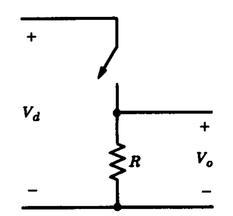 --- # Step-Down (Buck) Converter: ## Simplest Case 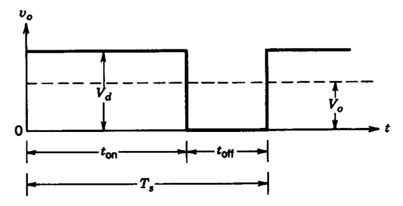 --- # Let's make the output voltage smoother -- ## Add a Low Pass Filter (eg LC Filter) 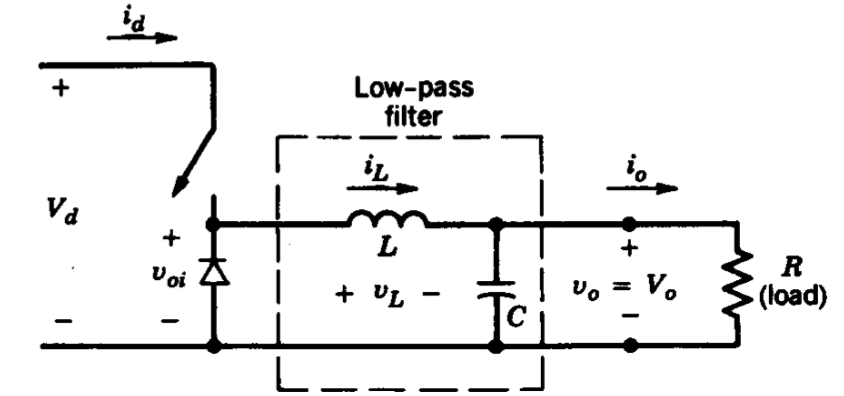 ### [Buck Converter Simulation](https://www.multisim.com/content/9zdN2fmAxbMcsVv46Ap9KX/buck-converter/) --- # Let's make the output voltage smoother -- ## LC Filter Characteristics (More in the following weeks) <img src="https://www.maximintegrated.com/en/images/appnotes/883/883Fig04a.gif" alt="Drawing" style="width: 550px;"/> --- ## Why do we have the diode for? -- ## Freewheeling Diode: Conducts when switch is off --- ## Operating Modes (in CCM) 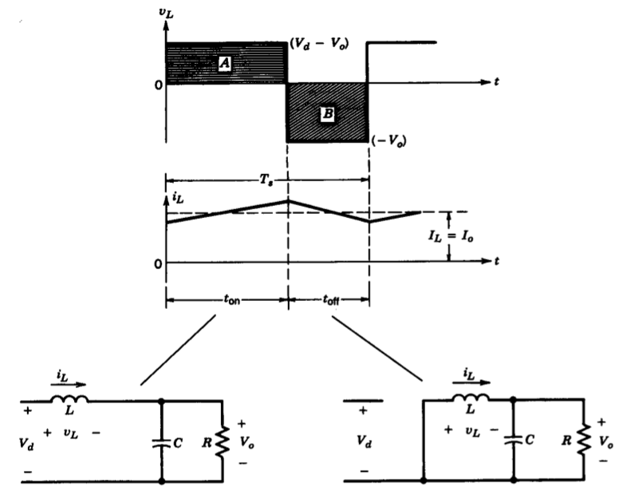 CCM: Continuous Conduction Mode --- ## Step-Down (Buck) Converter: -- #\\(V_o = D V_d\\) -- ### Neglecting losses #\\(I_o = I_d/D\\) ### Like a DC transformer with a turns ratio of \\(D:1\\) ! --- # Transition to DCM -- 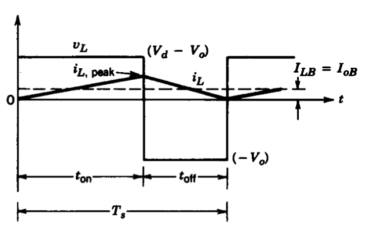 --- # Transition to DCM ### Boundary Current between CCM and DCM -- ## \\(I\_{LB}= \dfrac{D T\_s}{2L} (V\_d - V\_o)\\) -- ## when D=0.5 ## \\(I\_{LB\_{max}}= \dfrac{T\_s V\_d }{8L}\\) --- # Transition to DCM 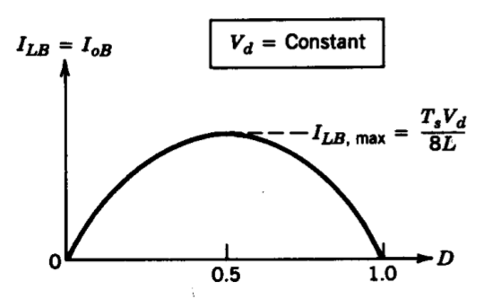 --- # Transition to DCM ### Minimum Inductance for Continuous Current ### \\(L\_{min}= \dfrac{(1-D) }{2 f\_s} R\\) -- ### Current Ripple for a given inductance ### \\(\Delta i\_{L}= (\dfrac{V\_s - V\_o}{L}) DT = \dfrac{V\_o (1 - D)}{L f\_s} \\) --- # Discontinuous Conduction Mode -- 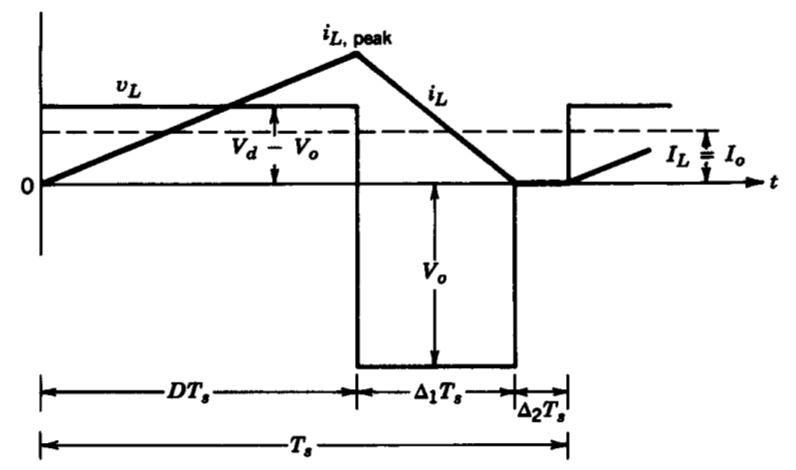 ### Details and derivations are in the textbook. --- # Discontinuous Conduction Mode ### Output voltage is increases in DCM if Vd and D is kept constant -- 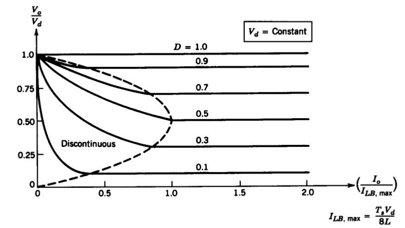 ### Critical current is max, when D=0.5 --- # Discontinuous Conduction Mode ### or duty cycle needs to be reduced to keep Vo constant -- 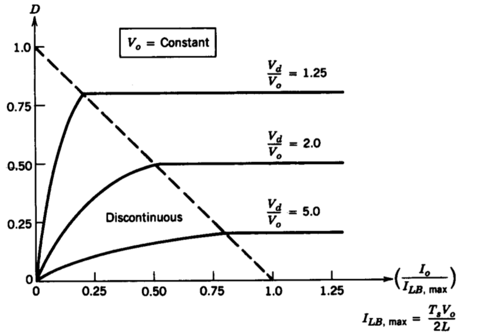 ### Critical current is max, when D=0.5 --- # Voltage Ripple -- 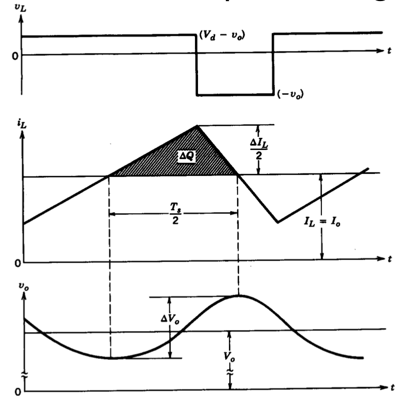 --- # Voltage Ripple -- ### \\(\Delta V\_o = \dfrac{\Delta Q}{C}\\) -- ### \\(\Delta V\_o = \dfrac{\Delta i\_L T\_s}{8C}\\) -- ### \\( \dfrac{\Delta V\_o}{V\_0}= \dfrac{(1-D) T\_s^2 }{8LC} \\) -- ## Can you put it in a much nicer form? --- # Voltage Ripple ### \\( \dfrac{\Delta V\_o}{V\_0}= \dfrac{(1-D) T\_s^2 }{8LC} \\) -- ### \\( \dfrac{\Delta V\_o}{V\_0}= \dfrac{\pi^2 (1-D) }{2} {\bigg(\dfrac{f\_c}{f\_s}\bigg)}^2 \\) --- # Effect of Capacitor ESR -- 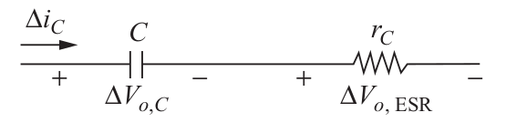 -- ## \\( \Delta V\_{o, ESR} = \Delta i\_{c} r\_{c} = \Delta i\_{L} r\_{c} \\) --- # Synchronous Buck Converter -- 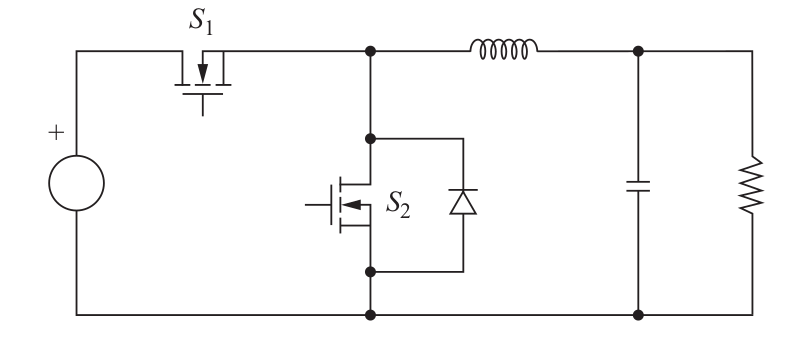 ### What is the purpose of the extra MOSFET? -- ### Increased efficiency due to reduced diode loss. ### ( \\(R\_{ds-on}\\) instead of \\(V\_{forward}\\) ) --- # Design Decisions -- ## Small Volume is desired: -- - ## Increase \\(f_s\\), LC filter gets smaller. - ## Switching loss is increased (also increases heatsink volume) --- # Design Decisions ## High Efficiency is desired: -- - ## Limit \\(f_s\\), switching loss is reduced. - ## LC filter gets bigger - ## Use Synchronous Buck (Can achieve higher \\(f_s\\) for same efficiency) - ## Cost of the converter is increased --- # Step-Up (Boost) Converter -- <img src="./images/ee463/boost_converter.png" alt="Drawing" style="width: 700px;"/> --- # Step-Up (Boost) Converter ## Can you plot the on & off states? -- 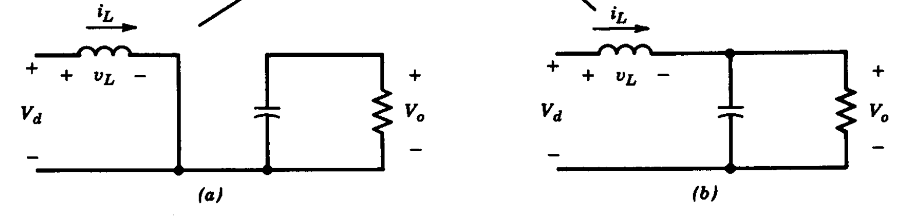 -- ### Mechanical Analogy: Ram Pump ### [How the ram pump works?](https://www.youtube.com/watch?v=i31hGJ93OTg), [How to make a ram pump](https://www.youtube.com/watch?v=0S2u_tdZkHs), [Largest ram pump](https://www.youtube.com/watch?v=pORYUjKoSuA) --- # Step-Up (Boost) Converter -- ## Can you plot the voltage & current waveforms? -- ## Can you find the relation between \\(V_o\\) and \\(V_d\\)? -- ## [Plexim Simulation](https://www.plexim.com/academy/power-electronics/boost-conv) --- # Step-Up (Boost) Converter -- <img src="./images/ee463/boost_on_off_voltage.png" alt="Drawing" style="width: 650px;"/> --- # Step-Up (Boost) Converter -- ## \\(V\_d t\_{on} + (V\_d-V\_o)t\_{off}=0\\) -- ## \\( \dfrac{V\_o}{V\_d} = \dfrac{T\_s}{t\_{off}} = \dfrac{1}{1-D} \\) -- ## \\( \dfrac{I\_o}{I\_d} = (1-D) \\) --- # Transition to DCM -- 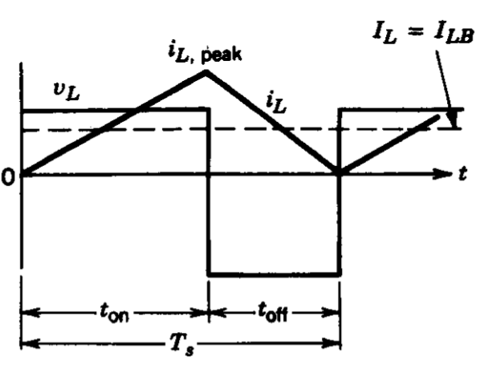 --- # Transition to DCM -- 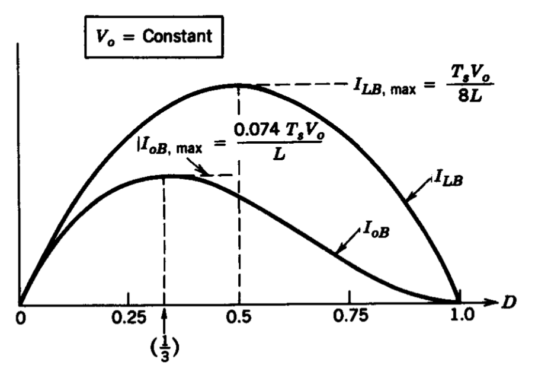 --- # DCM -- ### Occurs at light loads 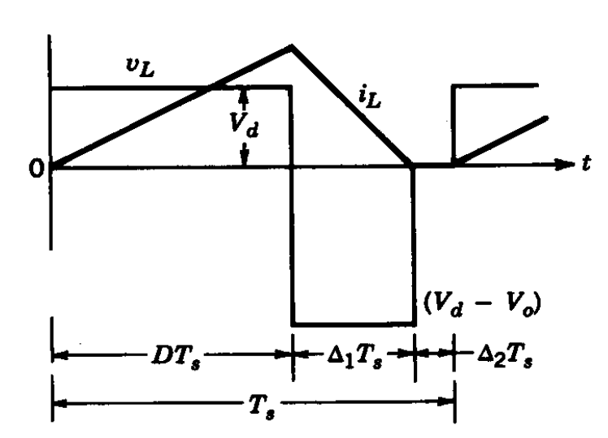 --- # DCM -- ### In order to keep Vo constant 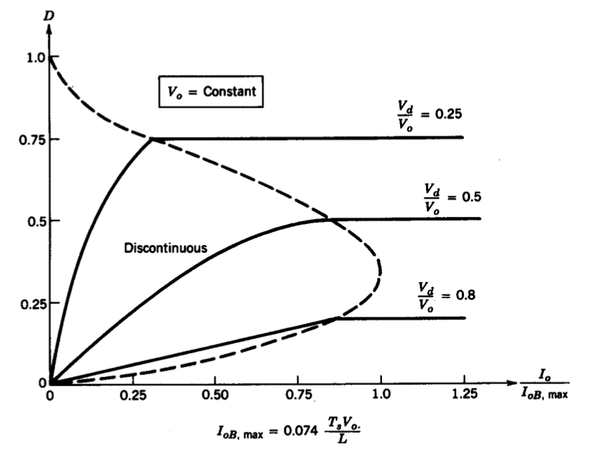 --- # Ideal vs. Reality -- ## What is Vo as D goes to 1? -- <img src="./images/ee463/boost_ideal.png" alt="Drawing" style="width: 450px;"/> --- ## Output Ripple -- ### Can you derive the operating modes? -- 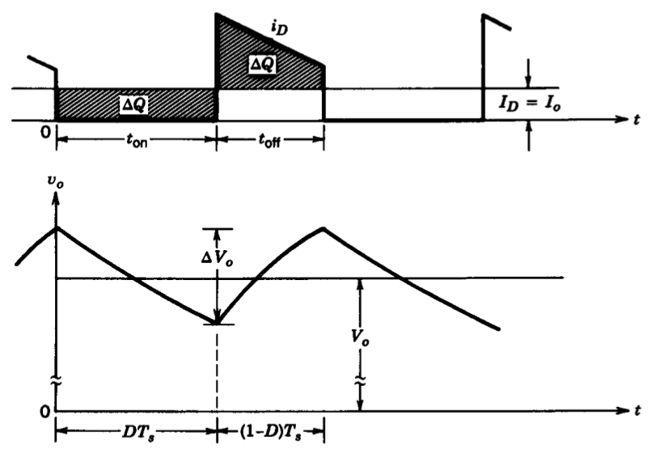 --- ## Can you obtain the operating modes of this converter? -- 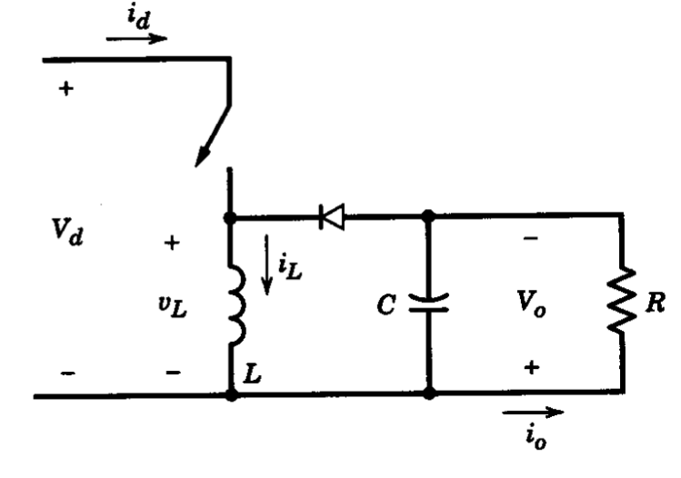 -- # Buck-Boost Converter ## [Plexim Simulation](https://www.plexim.com/academy/power-electronics/buckboost-conv) --- # Buck-Boost Converter ## Operating Modes -- ### Switch is ON (Inductor Charges) <img src="https://www.allaboutcircuits.com/uploads/articles/4B-Converter-in-Equilibrium-2_(4).png" alt="Drawing" style="width: 750px;"/> --- # Buck-Boost Converter ## Operating Modes -- ### Switch is OFF (Inductor Discharges) <img src="https://www.allaboutcircuits.com/uploads/articles/4B-Converter-in-Equilibrium-2_(5).png" alt="Drawing" style="width: 750px;"/> --- # Buck-Boost Converter ## Output Voltage -- #\\(V_o = \dfrac{D}{(1-D)} V_d\\) ### Notice the reverse polarity of Vo in the circuit -- ### [Practical Design Exercise](http://www.ti.com/power-management/non-isolated-dc-dc-switching-regulator/overview.html) --- ## Non-Inverting Buck-Boost Converter -- <img src="https://www.allaboutcircuits.com/uploads/articles/4B-Converter-in-Equilibrium-2_(7).png" alt="Drawing" style="width: 750px;"/> ## Uses two synchronized switches ## Both switches turn on and off simultaneously ### [Design tips for an efficient non-inverting buck-boost convertee](http://www.ti.com/lit/an/slyt584/slyt584.pdf) --- ## Non-Inverting Buck-Boost Converter <img src="https://www.allaboutcircuits.com/uploads/articles/4B-Converter-in-Equilibrium-2_(7).png" alt="Drawing" style="width: 750px;"/> ## It is also possible to use as a buck converter ## Q2 always off, Q1 is controlled --- ## Non-Inverting Buck-Boost Converter <img src="https://www.allaboutcircuits.com/uploads/articles/4B-Converter-in-Equilibrium-2_(7).png" alt="Drawing" style="width: 750px;"/> ## It is also possible to use as a boost converter ## Q1 always on, Q2 is controlled --- ## Generalized Version: 4-switch buck-boost 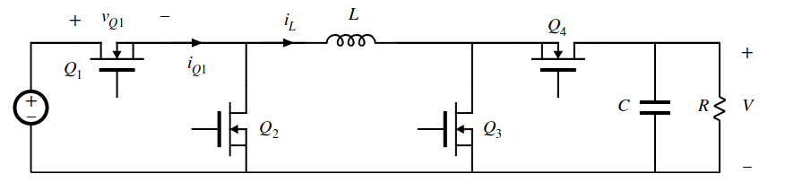 -- - ### Buck Mode: Q1, Q2 are controlled, Q3 is OFF, Q4 is ON -- - ### Boost Mode: Q3,Q4 are controlled, Q1 is ON, Q2 is OFF -- - ### Buck-Boost Mode: Q1 & Q3 are simultaneously ON, when Q2 & Q4 are simultaneously OFF, and vice versa. --- ## Can you [compare](https://www.eetimes.com/document.asp?doc_id=1273276&page_number=1) the input/output noise level? <img src="https://m.eet.com/media/1055270/Figure_1.jpg" alt="Drawing" style="width: 450px;"/> --- <img src="http://legendsrevealed.com/entertainment/wp-content/uploads/2015/10/future-continued.jpg" alt="Drawing" style="width: 350px;"/> -- ## EE464 - ## Flyback Converter - ## Ćuk Converter - ## SEPIC Converter - ## Resonant Converters --- # Exercises --- ## You can download this presentation from: [keysan.me/ee463](http://keysan.me/ee463)